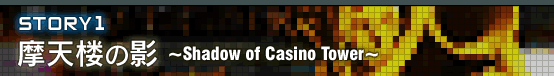

PSYCHOGUN CARD
Restore the original web-password rewards for your Psychogun Card. Generate or inspect a nine-letter code, entirely offline.
01CARD IDENTIFICATION
1–9 printable ASCII characters, padded with zero bytes. Match the actual card bytes exactly.
02SELECT WEB REWARDS
Eight verified password flags. Individual reward names are still under investigation.
Advanced parameters
Defaults reproduce our native-tested fixture; the original website’s key/version convention is unknown.
02CHECK A WEB PASSWORD
Checks the recovered checksum and card-name sum/length. It does not verify a unique card identity.
01HOW THE CARD SYSTEM WORKS
The original arcade cabinet validates reward passwords locally. This restoration replaces only the recovered incoming web-reward password function, not the original ranking website or card-reader hardware.
- Identify the nine raw bytes of your card name.
- Select the desired web reward flags and generate a code.
- Use the game's original password-entry path when available. That interface and persistent card writing are not yet verified.
Hidden Namco collectibles are separate from web rewards. Pac-Man has been collected in both JP and EX after clearing its collection bit.
02HIDDEN ITEM GUIDE隠しアイテム攻略
Ten classic Namco collectibles, one per area. The difficulty ratings and locations come from the original Japanese guide. Destroy the trigger, then shoot the revealed collectible to acquire it.全10種類のナムコ隠しアイテムが各エリアに1つあります。難易度と出現場所は当時の公式攻略情報に基づきます。対象を破壊した後、出現したアイテムを撃って取得してください。
Runtime research: Pac-Man spawning and collection are verified in JP and EX. The other nine triggers are documented by Namco, but not yet independently tested. Items already marked as collected do not spawn. The ten-bit collection mask is separate from the eight password reward flags.実機コード検証：パックマンの出現・取得はJP・EXで確認済み。他9種は公式攻略情報に基づき、独立検証は未実施です。取得済みのアイテムは出現しません。10ビットの取得マスクは8ビットのWEB特典フラグとは別です。
STORY 1 / Shadow of Casino TowerSTORY 1 / 摩天楼の影

 AREA 1 Pac-Manパックマン★☆☆☆☆
AREA 1 Pac-Manパックマン★☆☆☆☆

After the first red soldier near the golden goddess statue, wait for the camera to move to the next scene. Destroy the illuminated GOLD MINE sign above the slot machines, toward the upper right.黄金の女神像付近で最初の赤兵を倒し、次の場面に移動したら右上のスロット上にある「GOLD MINE」の電飾看板を破壊する。
Original Namco guide ↗当時の公式攻略 ↗ · JP + EX runtime verifiedJP・EX出現・取得確認済み
 AREA 2 Akabei (Blinky)アカベイ★★☆☆☆
AREA 2 Akabei (Blinky)アカベイ★★☆☆☆

After the outdoor battle, enter the building. Shoot the floating elevator ahead with normal bullets; the Uketsuke Komachi reception robot is the landmark. When destroyed, the elevator crashes into the lower-left elevator and reveals the item.屋外戦の後にビルへ入り、正面に現れる浮遊エレベーターを通常弾で破壊する。受付小町が目印。左下のエレベーターに衝突するとアイテムが現れる。
Original Namco guide ↗当時の公式攻略 ↗ · Official guide / runtime untested公式攻略 / 実機コード未検証
STORY 2 / Sneaking into the Underground BaseSTORY 2 / 地下基地への潜入

 AREA 1 Taizo Hori (Dig Dug)ホリ・タイゾウ★★★☆☆
AREA 1 Taizo Hori (Dig Dug)ホリ・タイゾウ★★★☆☆

After the first molten-lava soldier encounter, move to the rotating turret. When WAIT ends, watch the distant walkway behind the turret. Avoid the lasers and shoot the soldier running from right to left.溶岩兵の最初の出現後、回転砲台へ移動する。WAIT終了後、砲台の奥の通路を右から左へ走る兵士を、レーザーをかわしながら倒す。
Original Namco guide ↗当時の公式攻略 ↗ · Official guide / runtime untested公式攻略 / 実機コード未検証
 AREA 2 Pookaプーカァ★☆☆☆☆
AREA 2 Pookaプーカァ★☆☆☆☆

After turning right in the corridor, Bits attack and a shutter blocks the path. In the final wave, destroy the swarm of Bits quickly: one carries the item, and they eventually flee off-screen.通路を右折した後、ビットが襲来しシャッターが閉まる。最後の攻撃で多数のビットが現れるので、画面外へ逃げる前に倒す。どれか一体がアイテムを持っている。
Original Namco guide ↗当時の公式攻略 ↗ · Official guide / runtime untested公式攻略 / 実機コード未検証
STORY 3 / Battle in the Snowy LandSTORY 3 / 銀世界での攻防

 AREA 1 Boss Galaxianボス・ギャラクシアン★★☆☆☆
AREA 1 Boss Galaxianボス・ギャラクシアン★★☆☆☆

During the aerial warship battle, as the camera circles from the front toward the rear, destroy the missile pod that appears.空中戦艦との戦闘で正面から後方へ回り込む際に現れるミサイルポッドを破壊する。
Original Namco guide ↗当時の公式攻略 ↗ · Official guide / runtime untested公式攻略 / 実機コード未検証
 AREA 2 Boss Galagaボス・ギャラガ★★★☆☆
AREA 2 Boss Galagaボス・ギャラガ★★★☆☆

During the mid-stage forward run and jump, use a Psycho Shot to destroy the small searchlight emplacement ahead. Destroy it early so the item is closer and easier to shoot.中盤の正面走行・ジャンプ中に、前方の小さなサーチライト付き砲台をサイコショットで破壊する。早めに壊すとアイテムが近づき、取得しやすい。
Original Namco guide ↗当時の公式攻略 ↗ · Official guide / runtime untested公式攻略 / 実機コード未検証
STORY 4 / The Treasure’s SecretSTORY 4 / 財宝の秘密

 AREA 1 Gilギル★★☆☆☆
AREA 1 Gilギル★★☆☆☆

Clear the first pyramid hall, then pass through the closing door into the narrow chamber. Before defeating the two Swordinians that attack, destroy the eye on the door behind them. Killing them first hides the eye and prevents the item from appearing.ピラミッド最初の広間を突破し、閉まりかけた扉の先の狭い部屋へ進む。襲ってくるソード人2体を倒す前に、背後の扉の目玉を破壊する。先に敵を倒すと目玉が引っ込み、取得できなくなる。
Original Namco guide ↗当時の公式攻略 ↗ · Official guide / runtime untested公式攻略 / 実機コード未検証
 AREA 2 Kiカイ★★★☆☆
AREA 2 Kiカイ★★★☆☆

After Sandra’s ultimate weapon copies the Psychogun, three backpack soldiers emerge from behind the ruins. Watch the right side and shoot the soldier who briefly peeks out from the shadows.サンドラの最終兵器がサイコガンをコピーした後、遺跡から3人のバックパック兵が現れる。右側の遺跡の陰から一瞬だけ顔を出す兵士を倒す。
Original Namco guide ↗当時の公式攻略 ↗ · Official guide / runtime untested公式攻略 / 実機コード未検証
STORY 5 / Classic Rival, Cristal Bowie!STORY 5 / 宿敵！クリスタルボウイ

 AREA 1 Solvalouソルバルウ★★★★☆
AREA 1 Solvalouソルバルウ★★★★☆

Mid-stage, a small warship ahead is destroyed and an Elephant flies past you. Destroy it during the brief window when it charges back from behind, appearing from the bottom of the screen.中盤で目の前の小型戦艦が破壊され、エレファントが後方へ飛び去る。再び画面下から突進してくる短い間に破壊する。
Original Namco guide ↗当時の公式攻略 ↗ · Official guide / runtime untested公式攻略 / 実機コード未検証
 AREA 2 Special Flagスペシャルフラッグ★★★★★
AREA 2 Special Flagスペシャルフラッグ★★★★★

Late in the stage, the swarm of small bees becomes a giant queen bee. Lock on to the drain opening on the back-left wall and hit it with a Psycho Shot. Shoot the item again before the water carries it off-screen.後半に小さな蜂の群れが巨大な女王蜂に変化したら、左奥の壁の排水口をロックオンしサイコショットで撃つ。流れ出たアイテムが画面外に流される前にもう一度撃って取得する。
Original Namco guide ↗当時の公式攻略 ↗ · Official guide / runtime untested公式攻略 / 実機コード未検証
03OTHER CARD UNLOCKABLESその他のカード特典
- Story progressionストーリー進行
- Continue from cleared stories; all five story selections are restored by our JP/EX memory experiments.クリアしたストーリーの続きからプレイ可能。JP・EXのメモリ実験で全5話の選択を確認済み。
- Game modesゲームモード
- Normal, Eternal, Burst and Extreme. All four menus and HUD states are verified; full mode-specific rules remain under test.ノーマル・エターナル・バースト・エクストリーム。全モードのメニューとHUDを確認済み。詳細なゲームルールは検証中。
- Psychogun upgradesサイコガン強化
- Attack power, lock-on count and lock-on range. Card-based upgrade persistence and exact memory mappings remain under research.攻撃力・ロックオン数・ロックオン範囲。カードへの永続保存と詳細なメモリ構造は調査中。
- Alternate character appearancesキャラクター外見変更
- Character customization, including Lady’s human form (Emeralda Samborne), is reported; pre-surgery Cobra is a research lead. Individual password reward assignments remain unverified.レディの人間時代（エメラルダ）の姿などの外見変更が報告されています。整形前のコブラは調査対象です。各WEB特典フラグの対応は未確認。
01MEMORY MAP / EE OFFSETS
| Field | JP / CBR1 | EX / CBR2 |
|---|---|---|
| Card record | 00CEE140 | 00CEDF40 |
| Progression | 00CEE173 | 00CEDF73 |
| Collectibles | 00CEE175 | 00CEDF75 |
| Web rewards | 00CEE180 | 00CEDF80 |
| Native decoder | 002F0D20 | 002F0BA0 |
Physical EE offsets, not Windows host addresses. This page does not read or modify emulator memory.
02RECOVERED CODEC
Nine custom base-26 letters encode a five-byte payload: card-name sum and length, XOR key, reward mask, six-bit checksum and two-bit version.
WUFQZXCGEIKRJHPLBNYATODVSMKnown synthetic fixture: COBRA + four zero bytes, mask FF, key 0, version 0 → ZBEXCKAOI.
Unofficial preservation tool. Reward identities, real card-name encoding, the native entry screen and persistence remain unverified. Story, mode and collectible unlocks are not encoded by this password.